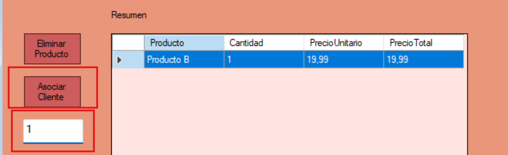
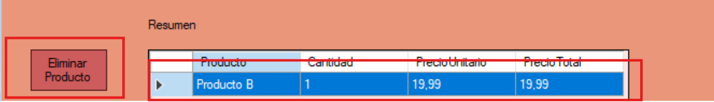

Ayuda: Generar Carrito
La pantalla de Generar Carrito permite al usuario asociar un carrito a un cliente y generar el mismo. Se puede crear un cliente desde esta pantalla
Guia paso a paso
Siga estos pasos para generar un nuevo carrito:
- Ingrese un numero de cliente valido.
- Haga clic en "Asociar cliente" para asociar el carrito al cliente.
- Haga clic en "Generar carrito" para generar el carrito.

Siga estos pasos para eliminar un producto del carrito:
- Seleccionar un producto del DataGridView.
- Haga clic en "Eliminar producto" para eliminarlo del carrito.

Notas adicionales
El boton "Registrar cliente" lo redirige al formulario de gestion de clientes para agregar, modificar o eliminar un cliente.
Recuerde que solo los usuarios con permisos adecuados pueden gestionar algunas acciones.